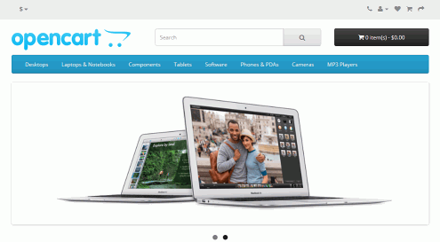
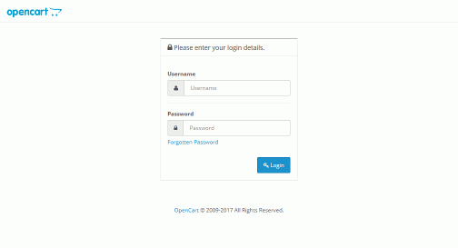
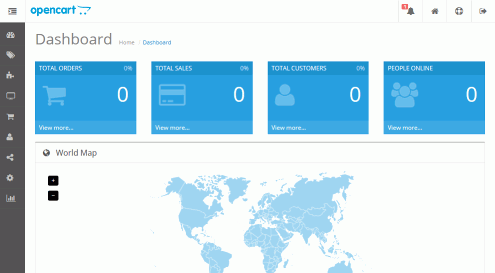

Bitnami. Ejercicios (1). Aplicación única en máquina virtual Ubuntu
En esta lección se proponen ejercicios para conocer y utilizar las Máquinas Virtuales de aplicación de Bitnami. Se pueden consultar las soluciones de estos ejercicios de Bitnami (1), aunque se recomienda intentar realizarlos primero sin recurrir a estas soluciones.
En estos ejercicios se nombran las versiones disponibles actualmente (enero de 2017), pero seguramente se podrán realizar sin problemas con versiones posteriores.
Nota: En estos ejercicios se propone únicamente la instalación de la aplicación OpenCart, pero se anima al alumno a probar otras aplicaciones.
Bitnami (1) 1 - VirtualBox
En este ejercicio se pide descargar e instalar VirtualBox. Lógicamente, no es necesario hacerlo si ya tiene instalada la última versión de VitrtualBox.
Visite la página web de VirtualBox.
Descargue la última versión de VirtualBox. Actualmente (enero de 2017), la última versión disponible es VirtualBox 5.1.14, publicada el 17 de enero de 2017.
Instale VirtualBox.
Descargue el VirtualBox Extension Pack correspondiente a la versión descargada.
Instale VirtualBox Extension Pack.
Bitnami (1) 2 - Máquina virtual con OpenCart
Visite la página web de Bitnami.
Descargue la máquina virtual de Opencart de Bitnami. Actualmente (enero de 2017), la versión disponible es OpenCart 2.3.0.2 en una máquina virtual Ubuntu 14.04.
Importe la máquina virtual de OpenCart de Bitnami en VirtualBox.
Arranque la máquina virtual.
Compruebe en el navegador del ordenador anfitrión que puede ver la tienda de ejemplo de OpenCart, escribiendo la dirección http://AAA.BBB.CCC.DDD en la que AAA.BBB.CCC.DDD es la dirección IP de la máquina virtual.

Compruebe en el navegador del ordenador anfitrión que puede acceder como administrador de la tienda OpenCart escribiendo la dirección adecuada.


Nota: El navegador mostrará un aviso sobre el certificado de seguridad del sitio web
 Nota: El navegador mostrará un aviso sobre el certificado de seguridad del sitio web
Nota: El navegador mostrará un aviso sobre el certificado de seguridad del sitio web